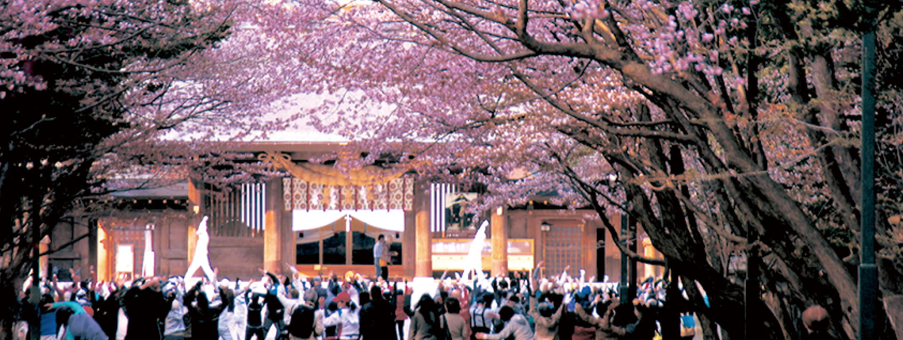
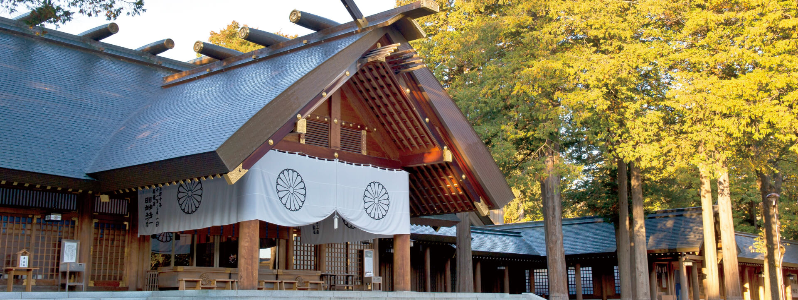
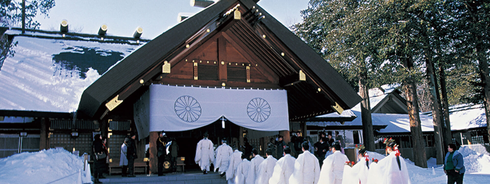
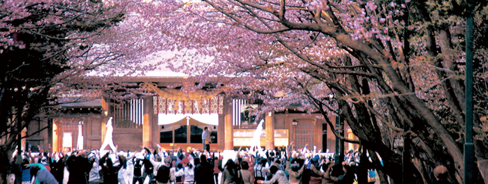
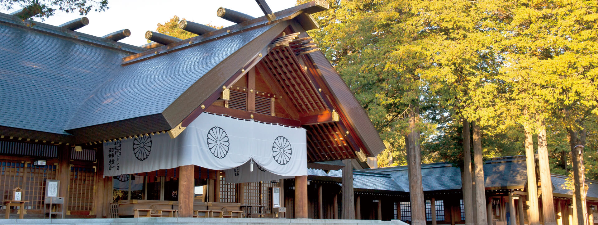
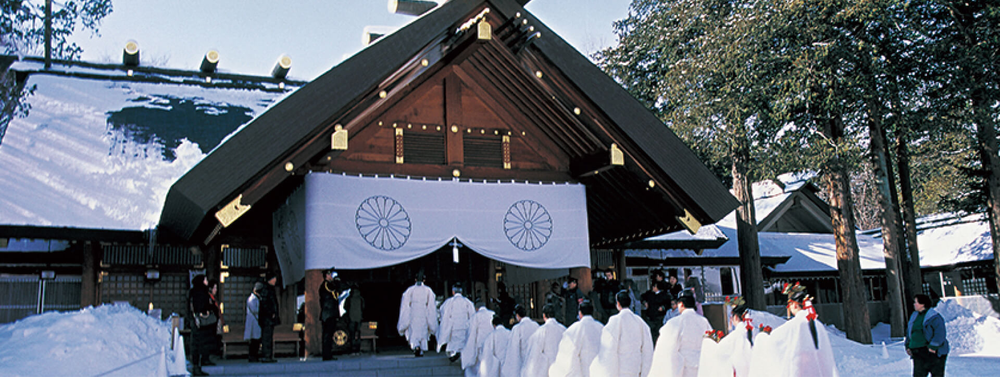

Hokkaido Jingu, also known as Hokkaido Shrine, stands as the largest Shinto shrine in Hokkaido, Japan's northernmost island. Situated amidst the serene Maruyama Park in Sapporo, this sacred site was established in 1869 to honor Emperor Meiji and Empress Shoken. Renowned for its architectural grandeur and tranquil surroundings, Hokkaido Shrine attracts visitors seeking spiritual solace and cultural immersion. With its lush greenery and meticulously maintained grounds, the shrine offers a peaceful retreat from the bustling cityscape, inviting visitors to explore its rich history and profound significance in Japanese tradition.